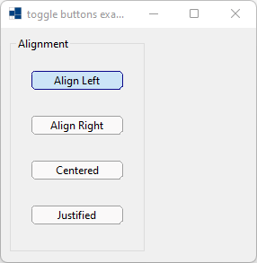
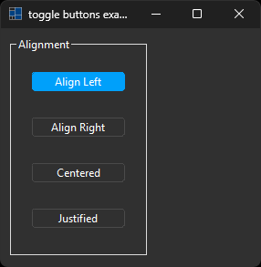
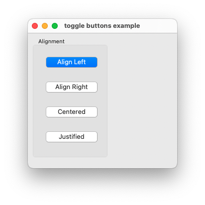
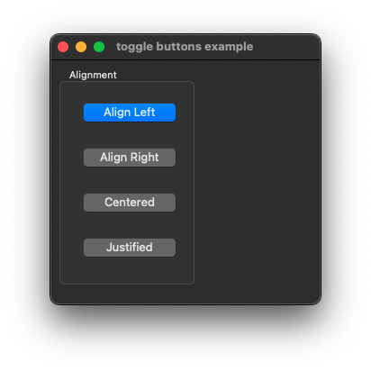
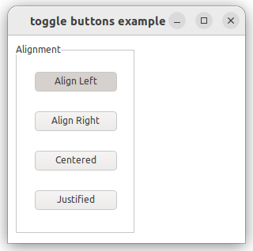
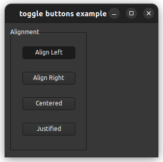

|
xtd
0.2.0
|
toggle_buttons.cpp
demonstrates the use of xtd::forms::toggle_buttons toggle_button object collection.
- Windows
- 

- macOS
- 

- Gnome
- 

#include <xtd/forms/application>
#include <xtd/forms/form>
#include <xtd/forms/group_box>
#include <xtd/forms/system_texts>
#include <xtd/forms/toggle_buttons>
using namespace xtd::forms;
auto main()->int {
auto group_box_alignment = group_box::create(form_main, system_texts::alignment(), {10, 10}, {150, 240});
auto toggle_button_align_left = toggle_buttons::align_left(group_box_alignment, false, check_state::unchecked, {20, 20});
auto toggle_button_align_right = toggle_buttons::align_right(group_box_alignment, false, check_state::unchecked, {20, 70});
auto toggle_button_centered = toggle_buttons::centered(group_box_alignment, false, check_state::unchecked, {20, 120});
auto toggle_button_justified = toggle_buttons::justified(group_box_alignment, false, check_state::unchecked, {20, 170});
application::run(form_main);
}
static void run()
Begins running a standard application message loop on the current thread, without a form.
static control create(const drawing::point &location={-1, -1}, const drawing::size &size={-1, -1}, const xtd::ustring &name=xtd::ustring::empty_string)
A factory to create a specified control with specified location, size, and name.
static control create(const drawing::point &location={-1, -1}, const drawing::size &size={-1, -1}, const xtd::ustring &name=xtd::ustring::empty_string)
A factory to create a specified control with specified location, size, and name.
static xtd::ustring alignment()
Gets a system-defined text that has a string value of "Alignment". This field is constant.
virtual bool checked() const noexcept
Gets a value indicating whether the toggle_button is in the checked state.
static toggle_button align_left(bool three_state=false, xtd::forms::check_state check_state=xtd::forms::check_state::unchecked, const drawing::point &location={-1, -1}, const drawing::size &size={-1, -1}, const xtd::ustring &name=xtd::ustring::empty_string)
Create a system-defined toggle_button that represent align left toggle_button.
Definition: toggle_buttons.h:120
static toggle_button centered(bool three_state=false, xtd::forms::check_state check_state=xtd::forms::check_state::unchecked, const drawing::point &location={-1, -1}, const drawing::size &size={-1, -1}, const xtd::ustring &name=xtd::ustring::empty_string)
Create a system-defined toggle_button that represent centered toggle_button.
Definition: toggle_buttons.h:273
static toggle_button justified(bool three_state=false, xtd::forms::check_state check_state=xtd::forms::check_state::unchecked, const drawing::point &location={-1, -1}, const drawing::size &size={-1, -1}, const xtd::ustring &name=xtd::ustring::empty_string)
Create a system-defined toggle_button that represent justified toggle_button.
Definition: toggle_buttons.h:749
static toggle_button align_right(bool three_state=false, xtd::forms::check_state check_state=xtd::forms::check_state::unchecked, const drawing::point &location={-1, -1}, const drawing::size &size={-1, -1}, const xtd::ustring &name=xtd::ustring::empty_string)
Create a system-defined toggle_button that represent align right toggle_button.
Definition: toggle_buttons.h:137
The xtd::forms namespace contains classes for creating Windows-based applications that take full adva...
Definition: about_box.h:13
Generated on Sun Oct 1 2023 07:46:00 for xtd by Gammasoft. All rights reserved.